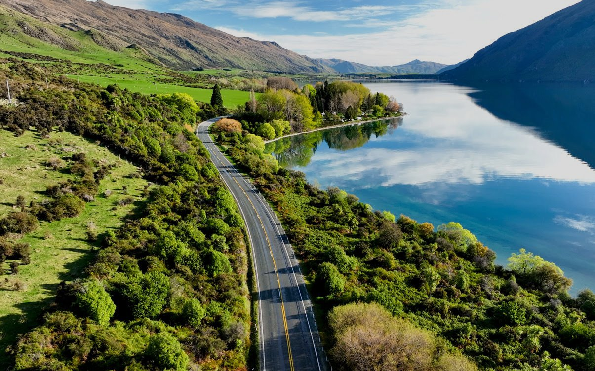

Best Places to Visit on a South Island Road Trip

Introduction
New Zealand’s South Island is a treasure trove of stunning landscapes, from towering mountains and turquoise lakes to rugged coastlines and charming towns. Exploring it by road allows you to experience these wonders at your own pace. Whether you're after adventure, scenic beauty, or peaceful nature, the South Island delivers. Here are the top places to include on your road trip itinerary.
Christchurch
Begin in Christchurch, the South Island’s largest city. Often called the “Garden City,” it combines urban sophistication with expansive green spaces like the Botanic Gardens. Discover the vibrant street art scene and learn about local history at the Canterbury Museum.
Lake Tekapo
Drive southwest to the picturesque Lake Tekapo. Its striking turquoise waters, the iconic Church of the Good Shepherd, and surrounding lupin blooms in spring make this a must-see. Nearby Mount John Observatory is renowned for its clear night skies, perfect for stargazing.
Mount Cook / Aoraki National Park
Home to New Zealand’s highest peak, Aoraki/Mount Cook, this national park is a haven for hikers and photographers. Popular trails like the Hooker Valley Track offer glacier views and alpine scenery that are truly unforgettable.
Wanaka
This lakeside town is known for its relaxed vibe and stunning scenery. Wanaka offers plenty of outdoor activities such as hiking, mountain biking, and water sports. Visit the famous “That Wanaka Tree,” a lone tree growing in the lake, a favourite photo spot.
Queenstown
Known as the adventure capital of New Zealand, Queenstown is perfect for adrenaline seekers. Enjoy bungy jumping, skydiving, jet boating, or simply explore the lively town centre with its restaurants, shops, and bars. Nearby wineries in Gibbston Valley provide a more laid-back experience.
Fiordland National Park & Milford Sound
No South Island road trip is complete without visiting Fiordland National Park. Take a boat cruise on Milford Sound to witness towering cliffs and cascading waterfalls. The park also offers world-class hiking trails for those who want to explore on foot.
Te Anau
Often used as the gateway to Fiordland, Te Anau is a picturesque town on the shores of Lake Te Anau. It offers great accommodation and dining options and access to the Kepler Track, another famous Great Walk.
Dunedin
Head southeast to Dunedin, a city known for its Scottish heritage and Victorian architecture. Wildlife lovers can visit the Otago Peninsula for rare albatross and penguin sightings. The city also boasts vibrant arts and food scenes.
Kaikōura
On your way back north, stop at Kaikōura for marine wildlife encounters. Whale watching tours here regularly spot sperm whales, dolphins, and seals. The coastal walkways offer spectacular ocean and mountain views.
Tips for Your South Island Road Trip
-
Plan your route carefully and book accommodation in advance, especially during peak seasons.
-
Check the weather regularly as conditions can change quickly.
-
Fuel stations can be sparse in remote areas — keep your tank topped up.
-
Respect local wildlife and natural environments to help preserve New Zealand’s beauty.
Conclusion
A South Island road trip promises an unforgettable journey through some of the world’s most stunning landscapes. Whether you’re chasing adventure, peaceful nature, or cultural experiences, this itinerary offers a well-rounded glimpse of the best the island has to offer.